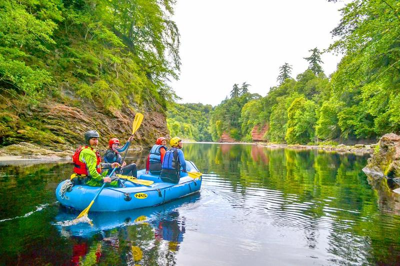
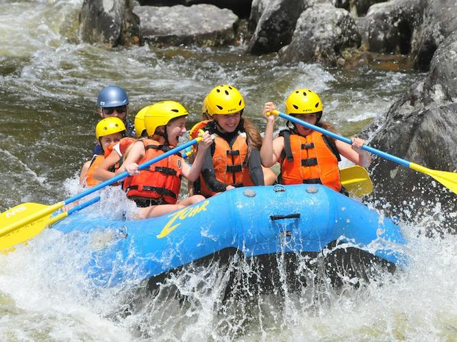

Choose Your Rafting Adventure
Discover the river trip that is right for you!
Our Rafting Adventures

Beginner Adventure
Enjoy a relaxing river trip with beautiful scenery. Perfect for beginners who want to discover the fun of rafting.

Intermediate Adventure
Experience exciting rapids and enjoy an unforgettable adventure. Ideal for people looking for more action on the river.

Advanced Adventure
Challenge yourself with powerful rapids and difficult river routes. Best for experienced rafters seeking an exciting experience.
Compare Our Trips
| Trip | Duration | Difficulty |
|---|---|---|
| Beginner Adventure | 2 hours | Easy |
| Intermediate Adventure | 4 hours | Moderate |
| Advanced Adventure | 6 hours | Easy |
| Choose the trip that best fits your adventure! | ||
Ready for Your Adventure?
Contact us to plan your rafting trip.
Contact Us